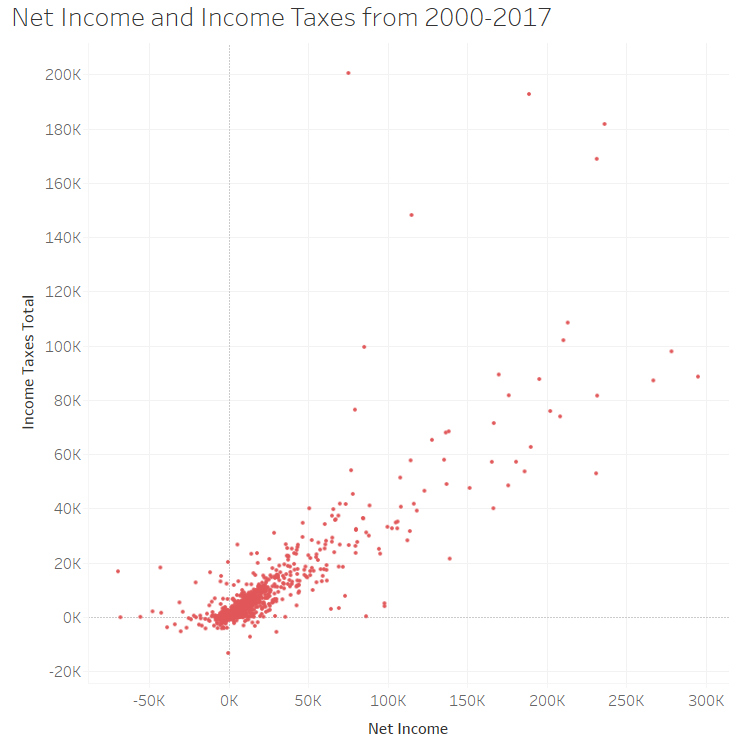

Scatter Plots#
What is a Scatter Plot?#
A scatter plot is a set of points plotted on a horizontal and vertical axis (also called an x-axis and a y-axis). Because there are generally many points, scatter plots appear as though a bunch of dots have been scattered on the graph. Scatter plots use two continuous or discrete variables (i.e., an x variable and a y variable). Each point represents one observation of an underlying data, and each observation has a value for the x variable and a value for the y variable. For each observation, where these two values intersect on the plot there is a dot. Therefore there are as many dots as there are observations in the data. See below for an example of a scatter plot.
Illustration 1: Scatter Plot of Companies’ Total Income Tax and Net Income (in millions)#

Illustration 1 presents a scatter plot displaying companies’ net income and their total income tax. Each data point shows the net income and total income tax for one company. As expected, there is a positive relationship between the net income companies have and their total income tax; by this, we mean that as net income increases, total income tax tends to increase. Interestingly, though, there are some companies that have significantly small income tax expense compared to their net income.7 For example, companies like Amazon and Starbucks have taken some heat for not paying taxes: https://fortune.com/2019/04/11/amazon-starbucks-corporate-tax-avoidance/.
When to Use a Scatter Plot#
Scatter plots are useful for revealing the relationship between two variables. The relationship between variables is called correlation. When the data points appear to converge towards a straight line, this indicates a high correlation (strong relationship). If no correlation exists, the points appear randomly scattered.
Scatter plots are also useful when you are interested in the density of observations that fall in a particular area. For example in Illustration 1 there is a thick or dense grouping of dots which indicates where most companies fall.
Scatter Plots in Bokeh#
A scatter plot simply shows a dot for every \( (x, y) \) pair in your dataset. It is very easy to make scatter plots in Bokeh.
Let’s say that I want to plot the points \( (0,0), (1,1), (2,4), (3,9), (4,16) \). I will create two lists. The first list will contain the x-coordinates, and the second list will contain the y-coordinates. Run the following code cell to create these lists.
x_coords = [0,1,2,3,4]
y_coords = [0,1,4,9,16]
In the above cell, notice that the first element of x_coords corresponds to the first element of y_coords.
Now run the following cell to create a scatter plot.
from bokeh.plotting import figure, show
from bokeh.io import output_notebook
output_notebook()
myfig = figure(title='Scatter Plot',
height=300, width=300,
x_axis_label = 'x', y_axis_label='x')
# NOTICE: THIS LINE IS NEW
myfig.scatter(x=x_coords, y=y_coords)
show(myfig)
The above cell mostly contains code that you have already seen in this notebook. In fact, there is only one line that is new. That line is:
myfig.scatter(x=x_coords, y=y_coords)
That line tells Bokeh to draw a circle at every \((x,y)\) coordinate. That’s all there is to it! Notice that we used the keyword arguments x= and y= for readability.
Customizing your plot#
But wait, you say. That plot is fairly dull. And the circles are difficult to see. And you don’t like the color. Well, it’s pretty easy to customize all of that in Bokeh.
Let’s run the plot again, this time with some different options. Pay attention to the line myfig.circle(... and see which optional arguments we used.
myfig = figure(title='Scatter Plot',
height=300, width=300,
x_axis_label = 'x', y_axis_label='x')
# NOTICE: THIS LINE IS NEW
myfig.scatter(x=x_coords, y=y_coords, size=8, line_color='blue', line_width=2, fill_color='white')
show(myfig)
We customized the plot by adding these keyword arguments:
Argument |
What it does |
|---|---|
size |
Changes marker size. Default is 4. |
line_color |
Changes the border color of the circles. |
line_width |
Changes the border thickness of the circles. |
fill_color |
Changes the interior color of the circles. |
Standard Color Names#
Wait… How did I know I could use the strings ‘blue’ and ‘white’ as color names? There are some standard colors that are recognized by most web-based applications. You can find a list of those color names here.
Using Different Plot Markers#
In the above example, we used circles as plot markers. Circles are one type of “glyph”. Bokeh drew a circle at every \((x,y)\) coordinate because we told it to map every \((x,y)\) coordinate into a circle on the plot. If you want, you can use other markers. There’s nothing special about circles. Bokeh supports the following types of scatter markers:
asterisk
circle
circle_cross
circle_x
cross
dash
diamond
diamond_cross
inverted triangle
square
square_cross
square_x
triangle
x
If you want one of these, simply use the marker keyword argument when invoking the scatter method of the figure object. For example, to draw triangles in our example, we would have added marker='triangle' to the call to .scatter().
Let’s draw the same graph as above, but with diamonds:
myfig = figure(title='Scatter Plot',
height=300, width=300,
x_axis_label = 'x', y_axis_label='x')
# NOTICE: THIS LINE IS NEW
myfig.scatter(x=x_coords, y=y_coords, size=8, line_color='blue', line_width=2, fill_color='white', marker='diamond')
show(myfig)
Creating a Scatter Plot in Tableau#
Watch this video to learn about scatter plots in Tableau:
https://mediaspace.illinois.edu/media/t/1_7ni803bo
References#
7 Compustat